경기도 봉안당·납골당 166곳
경기도에는 이 데이터 기준으로 봉안시설이 모두 166곳 있습니다. 이 가운데 지방자치단체 등이 운영하는 공설 시설이 32곳, 재단법인·종교단체 등이 운영하는 사설 시설이 134곳입니다. 가장 많은 시설이 최초 안치기간을 15년으로 정하고 있습니다. 주차장을 갖춘 곳은 110곳(66%), 유족대기실이 있는 곳은 83곳, 장애인 편의시설이 있는 곳은 57곳입니다.
시군구별로 보기
경기도 엄선 추천 추모공원
 PREMIUM경기 고양시예원추모관100만 원부터상담·감사 선물 안내 ›
PREMIUM경기 고양시예원추모관100만 원부터상담·감사 선물 안내 › PREMIUM경기 고양시유일추모공원150만 원부터상담·감사 선물 안내 ›
PREMIUM경기 고양시유일추모공원150만 원부터상담·감사 선물 안내 › PREMIUM경기 고양시자연애숲150만 원부터상담·감사 선물 안내 ›
PREMIUM경기 고양시자연애숲150만 원부터상담·감사 선물 안내 › PREMIUM경기 고양시장안정사 (장안추모공원)400만 원부터상담·감사 선물 안내 ›
PREMIUM경기 고양시장안정사 (장안추모공원)400만 원부터상담·감사 선물 안내 › PREMIUM경기 광주시남서울 가족공원200만 원부터상담·감사 선물 안내 ›
PREMIUM경기 광주시남서울 가족공원200만 원부터상담·감사 선물 안내 › PREMIUM경기 광주시미타정사 (미타불교원)200만 원부터상담·감사 선물 안내 ›
PREMIUM경기 광주시미타정사 (미타불교원)200만 원부터상담·감사 선물 안내 › PREMIUM경기 광주시분당추모공원 휴150만 원부터상담·감사 선물 안내 ›
PREMIUM경기 광주시분당추모공원 휴150만 원부터상담·감사 선물 안내 › PREMIUM경기 김포시청솔수목원 (청솔수목장)350만 원부터상담·감사 선물 안내 ›
PREMIUM경기 김포시청솔수목원 (청솔수목장)350만 원부터상담·감사 선물 안내 ›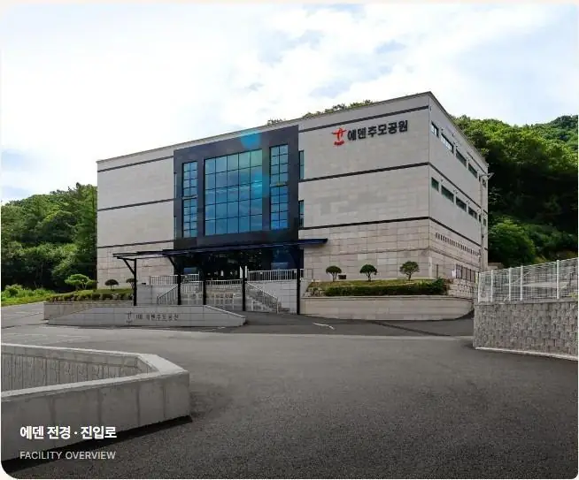
PREMIUM경기 남양주시남양주에덴추모공원120만 원부터상담·감사 선물 안내 ›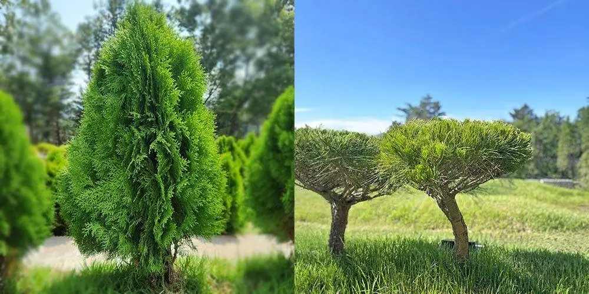
PREMIUM경기 남양주시무량사250만 원부터상담·감사 선물 안내 ›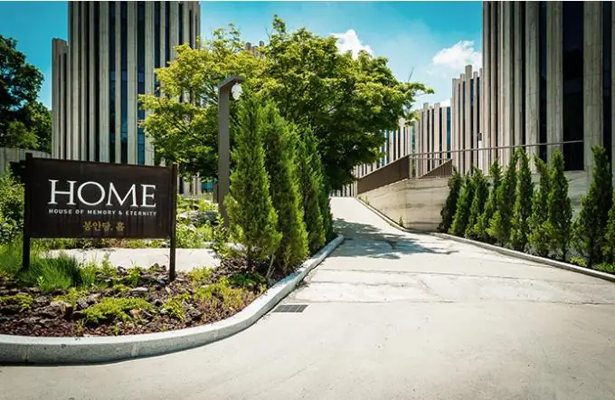
PREMIUM경기 성남시봉안당 홈200만 원부터상담·감사 선물 안내 ›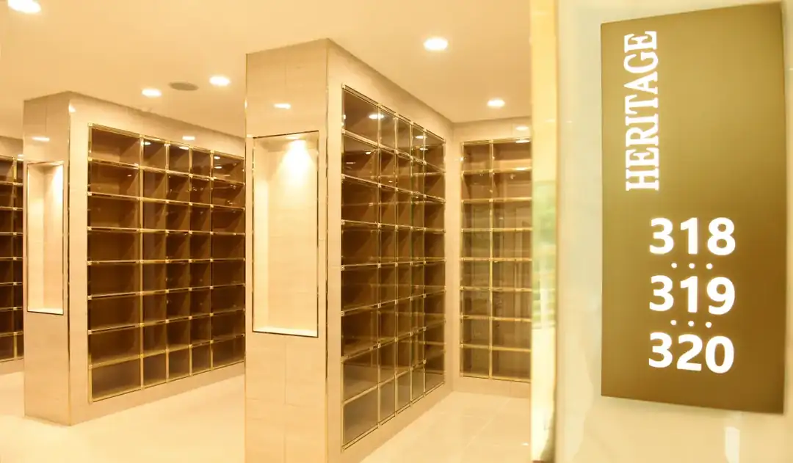
PREMIUM경기 안성시유토피아추모관150만 원부터상담·감사 선물 안내 ›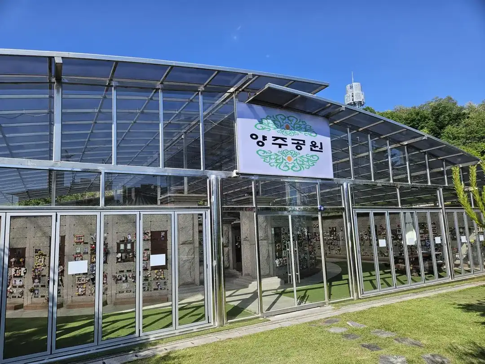
PREMIUM경기 양주시양주추모공원350만 원부터상담·감사 선물 안내 ›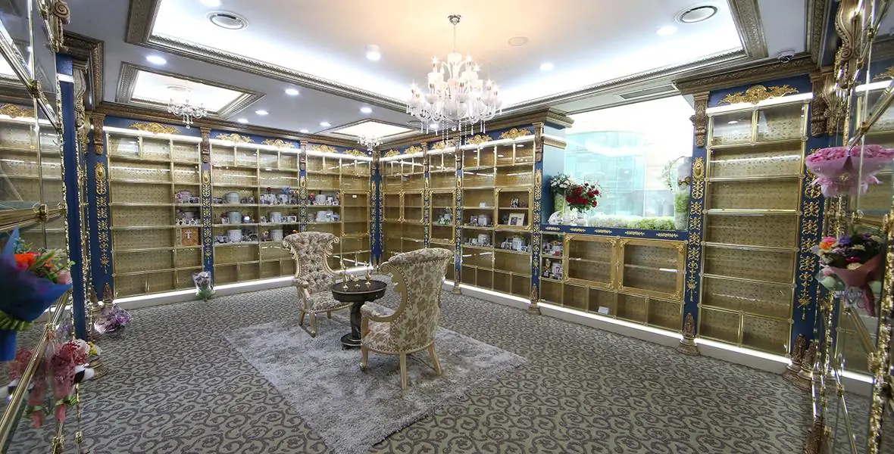
PREMIUM경기 양주시하늘안 추모공원250만 원부터상담·감사 선물 안내 ›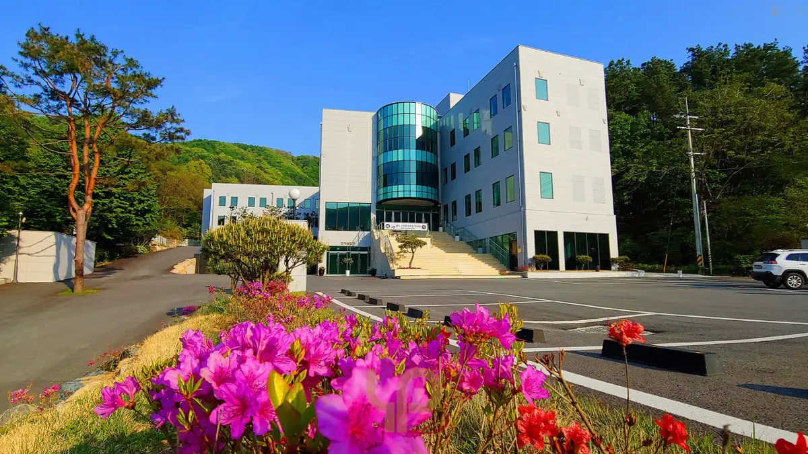
PREMIUM경기 양평군양평더포레200만 원부터상담·감사 선물 안내 ›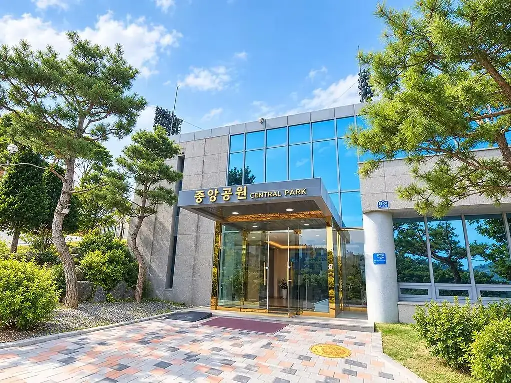
PREMIUM경기 연천군연천중앙추모공원150만 원부터상담·감사 선물 안내 ›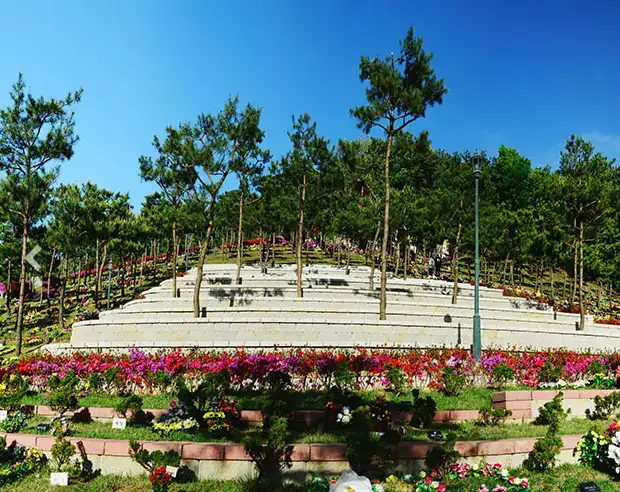
PREMIUM경기 용인시로뎀파크수목장250만 원부터상담·감사 선물 안내 ›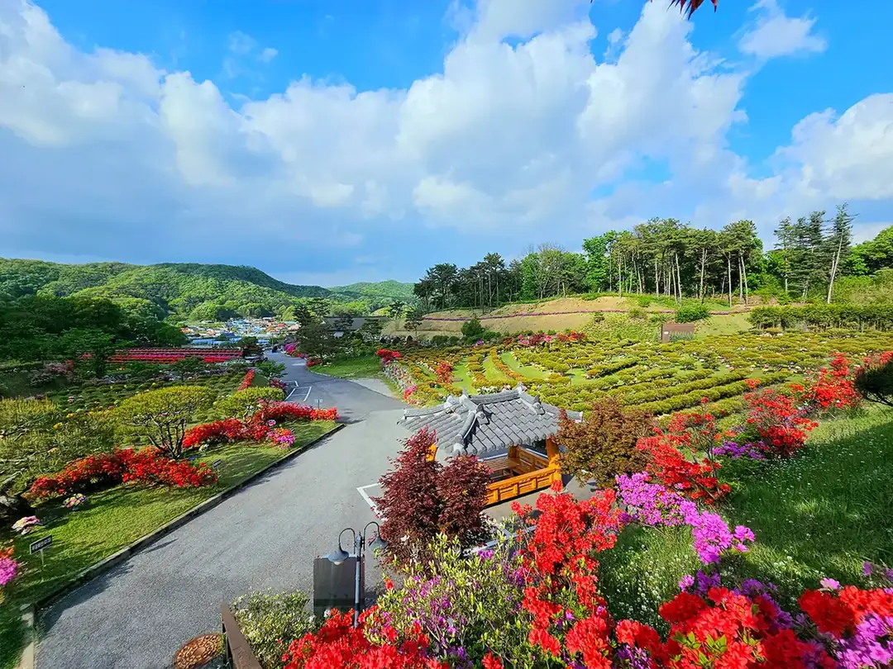
PREMIUM경기 용인시양지수목장(불광사)150만 원부터상담·감사 선물 안내 ›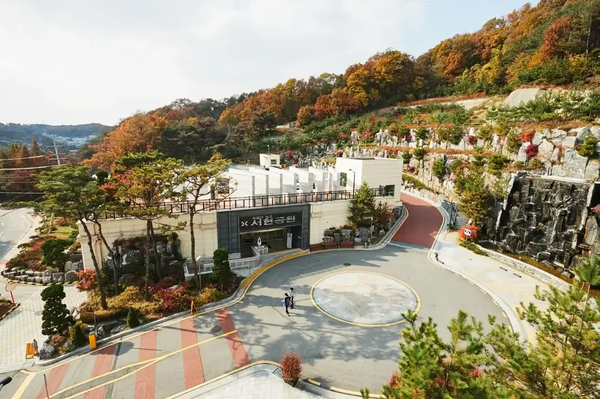
PREMIUM경기 파주시서현추모공원200만 원부터상담·감사 선물 안내 ›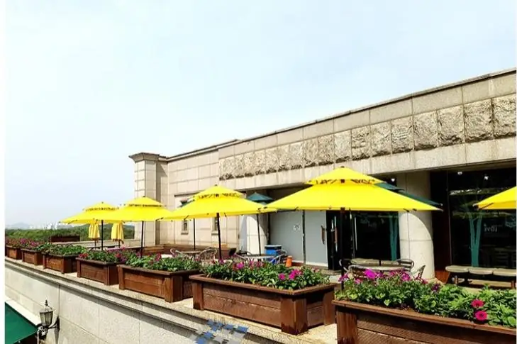
PREMIUM경기 파주시통일로 추모공원150만 원부터상담·감사 선물 안내 ›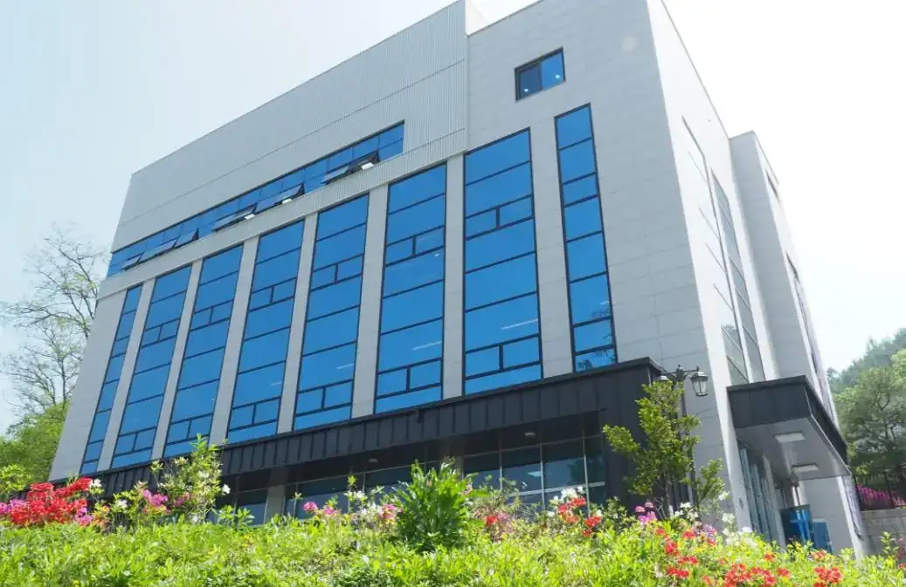
PREMIUM경기 파주시파주추모공원150만 원부터상담·감사 선물 안내 ›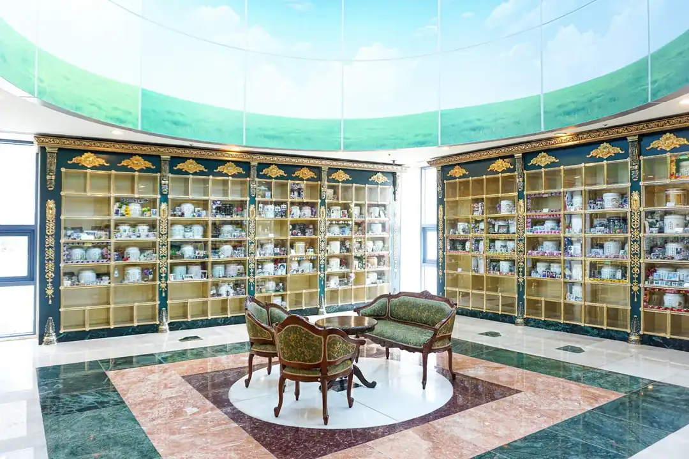
PREMIUM경기 평택시서호추모공원50만 원부터상담·감사 선물 안내 ›추천 추모공원 안내 「추천」 표시가 있는 추모공원은 봉안당 길잡이가 엄선해 추천하는 곳으로, 목록에서 먼저 보여 드립니다. 가격·조건은 시설이 정하며, 계약 전에 계약서로 꼭 확인하세요. 자세히
PREMIUM · 봉안당 길잡이 엄선
봉안당 길잡이 추천 추모공원 (수도권)
무료 상담 · 남은 자리와 분양가 안내 · 방문 예약 대행 · 계약하시면 스타벅스·신세계상품권 감사 선물을 꼭 드립니다
PREMIUM경기 고양시 · 봉안당예원추모관100만 원부터상담·감사 선물 안내 ›PREMIUM경기 고양시 · 봉안당유일추모공원150만 원부터상담·감사 선물 안내 ›PREMIUM경기 고양시 · 수목장자연애숲150만 원부터상담·감사 선물 안내 ›PREMIUM경기 고양시 · 봉안당장안정사 (장안추모공원)400만 원부터상담·감사 선물 안내 ›PREMIUM경기 광주시 · 봉안당·수목장남서울 가족공원200만 원부터상담·감사 선물 안내 ›PREMIUM경기 광주시 · 봉안당미타정사 (미타불교원)200만 원부터상담·감사 선물 안내 ›PREMIUM경기 광주시 · 봉안당분당추모공원 휴150만 원부터상담·감사 선물 안내 ›PREMIUM경기 김포시 · 수목장청솔수목원 (청솔수목장)350만 원부터상담·감사 선물 안내 ›PREMIUM경기 남양주시 · 봉안당남양주에덴추모공원120만 원부터상담·감사 선물 안내 ›PREMIUM경기 남양주시 · 수목장무량사250만 원부터상담·감사 선물 안내 ›어디가 좋을지모르시겠다면수도권 안에서 지역과 예산만
말씀해 주시면 골라 드립니다무료 상담 신청 ›
현재 수도권(서울·경기·인천)에서만 상담 서비스를 하고 있습니다.
봉안당 길잡이가 엄선해 추천하는 프리미엄 추모공원입니다.
경기도 전체 목록
함께 읽으면 좋은 가이드
가이드 전체 보기 ›자주 묻는 질문
경기도 봉안당(납골당)은 몇 곳인가요?
경기도에는 봉안시설이 166곳 있습니다. 공설 32곳, 사설 134곳이며 파주시, 가평군, 양평군, 화성시 순으로 많습니다.
경기도 봉안당 가격은 얼마인가요?
가격이 공개된 시설 기준으로 경기도 봉안당 개인단 중간 가격은 170만 원입니다. 가장 저렴한 곳은 대원사 봉안당(28만 원부터)입니다. 안치단 위치와 관리비에 따라 달라지니 시설에 확인하세요.
경기도 공설 봉안당은 어디인가요?
경기도 공설 봉안시설은 가평군공설봉안묘, 가평추모공원 봉안담, 광명메모리얼파크, 구리시공설묘지 무연고 봉안당, 구리시공설묘지 봉안묘 등 32곳입니다. 공설은 그 지역 주민 등 이용 자격이 있는 경우가 많습니다.
경기도에서 주차할 수 있는 봉안당은?
경기도 봉안시설 166곳 중 110곳이 주차장을 갖추고 있습니다. 각 시설 정보의 주차장 항목을 확인하세요.